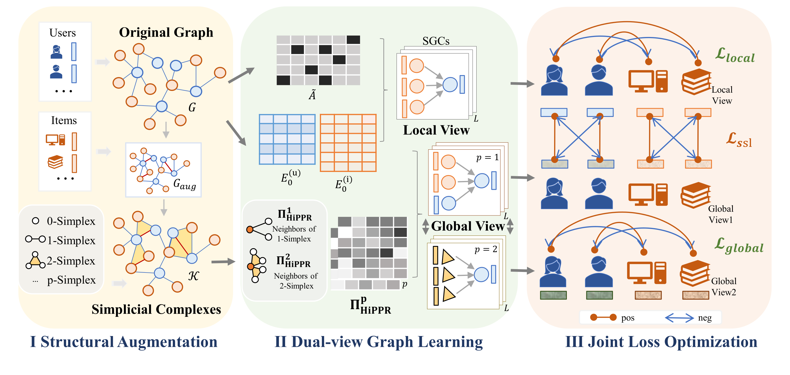
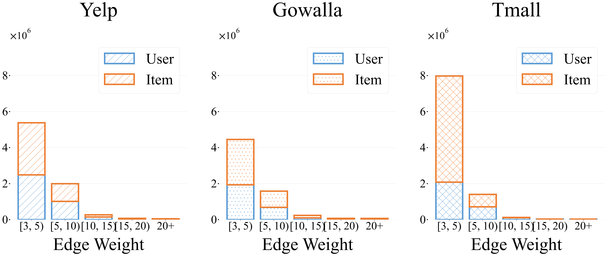
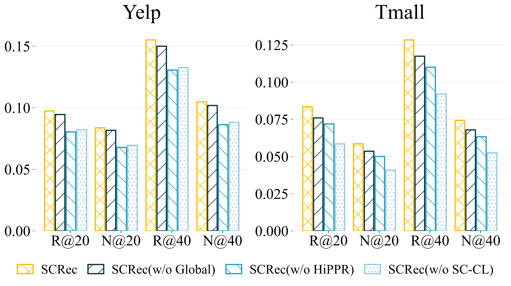
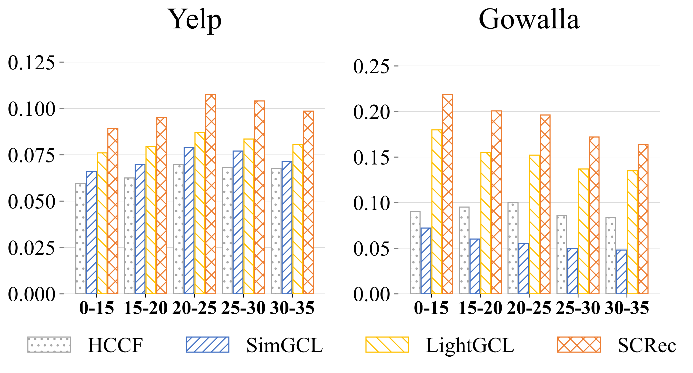
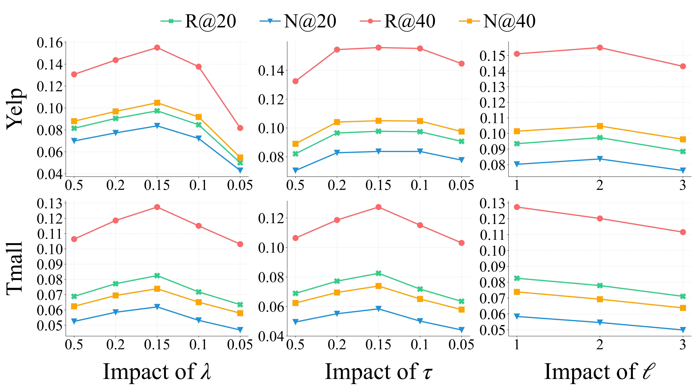
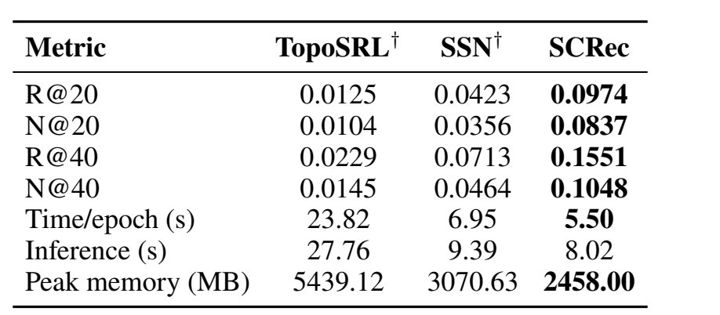
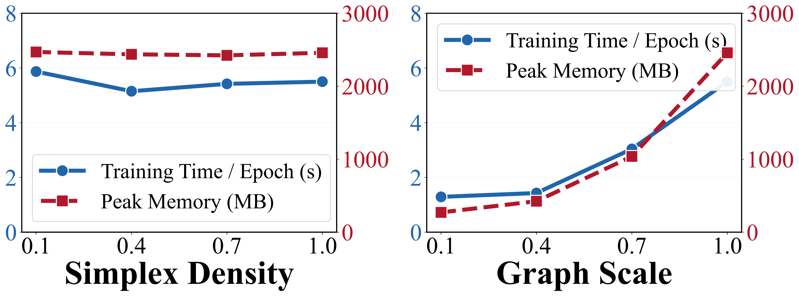

Simplicial Construction
从共同消费模式中提取高阶 item 组合，并保留由 downward closure 产生的多尺度子集。
SELF-SUPERVISED RECOMMENDATION · SIMPLICIAL COMPLEXES
以单纯复形刻画推荐系统中的层次化组合语义
SCRec: Hierarchical Simplicial Modeling for Self-Supervised Recommendation · AAAI 2027 Conference Submission
01 · MOTIVATION
协同推荐通常从 user-item 边出发建模，但多个物品之间的共同消费会形成更复杂的组合语义。SCRec 用单纯复形的 downward closure 表达多尺度子集关系，使推荐模型能同时保留局部协同信号与高阶组合结构。

核心直觉：如果一组物品共同出现，它的子集也携带可学习的协同模式；这种层次结构正是单纯复形比扁平超边更适合表达的部分。
02 · METHOD
SCRec 将原始协同交互转化为 recommendation-native simplicial complex，并把局部协同传播、全局 HiPPR 传播和跨视图对齐放在同一个自监督推荐框架中。

从共同消费模式中提取高阶 item 组合，并保留由 downward closure 产生的多尺度子集。
局部视图保留邻域协同信号；全局视图用 HiPPR 扩展 Personalized PageRank 的长程传播能力。
通过视图专属 BPR 学习推荐排序，并用异构 local-global alignment 拉近互补表示。
03 · MAIN RESULTS
实验覆盖 Yelp、Gowalla 与 Tmall，并在 Recall@20/40、NDCG@20/40 上比较图对比学习、超图推荐、拓扑推荐与 motif-based 推荐方法。

这些结果更强调“层次化组合建模”带来的稳定收益，而不是单纯依赖某一个数据集或某一种指标的偶然优势。
04 · ANALYSIS
除了主结果，论文还从结构分布、消融、低频用户、参数敏感性和计算成本等角度分析 SCRec 的有效性。






05 · CITATION
@unpublished{wang2027screc,
title = {SCRec: Hierarchical Simplicial Modeling for
Self-Supervised Recommendation},
author = {Wang, Yumeng and Peng, Qiyao and Zhang, Mingqiao and
Wang, Wenjun and Shao, Minglai},
note = {AAAI 2027 Conference Submission},
year = {2027}
}